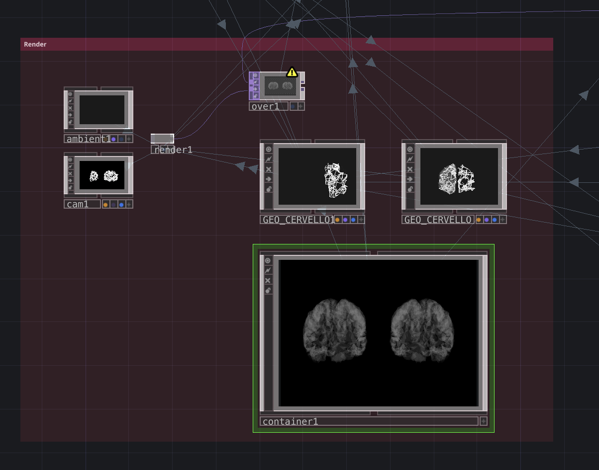
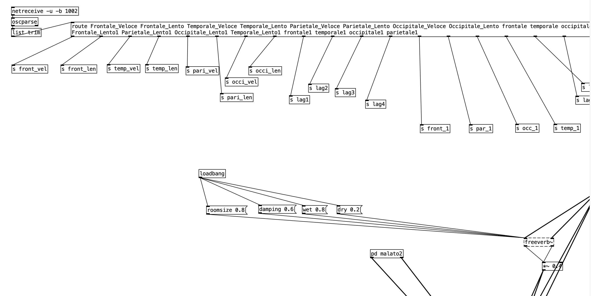

I dati del nostro progetto provengono da un dataset pubblico di elettroencefalografia (EEG), una tecnica non invasiva che registra l'attività elettrica del cervello tramite elettrodi appoggiati sul cuoio capelluto. Il dataset raccoglie le registrazioni di 88 persone a riposo, con gli occhi chiusi: 36 con malattia di Alzheimer, 23 con demenza frontotemporale e 29 soggetti sani di età comparabile.
Le registrazioni per ogni partecipante sono state effettuate con un apparecchio Nihon Kohden EEG 2100 e 19 elettrodi disposti secondo il sistema internazionale 10-20, affiancati da 2 elettrodi di riferimento. Il segnale è stato campionato a 500 Hz, cioè 500 misurazioni al secondo per ogni elettrodo. Ogni registrazione dura in media 12-14 minuti, per un totale di circa 485 minuti di dati Alzheimer e 402 di soggetti sani. La durata della malattia ha una mediana di 25 mesi. Lo stato cognitivo è stato misurato con il test MMSE (da 0 a 30: più basso è il punteggio, più grave è il declino), con una media di 17,75 nel gruppo Alzheimer e 30 nei sani.
I dati sono distribuiti nel formato standard BIDS e l'attività elettrica viene analizzata sulle cinque bande di frequenza cerebrali: delta, theta, alpha, beta e gamma. Studiare questi segnali permette di osservare le alterazioni nelle connessioni tra le aree del cervello tipiche di queste malattie. Per questo il dataset è uno strumento prezioso per la diagnosi precoce.
La visualizzazione è generata interamente in TouchDesigner. Uno script Python (Script SOP) campiona dei punti sulla mesh 3D di ogni lobo e li collega in una rete tramite un algoritmo di vicinanza che garantisce connessioni complete, senza nodi isolati. Lo stesso script, con parametri diversi, genera anche il cervello malato: meno nodi, meno connessioni, percorsi irregolari al posto di linee dritte, per restituire visivamente la perdita di connettività dell'Alzheimer. Il modello risponde al passaggio del mouse in tempo reale, illuminando i lobi esplorati.
Oltre alla parte visiva, il progetto prevede un canale di comunicazione verso l'esterno: i valori associati a ciascun lobo vengono inviati tramite protocollo OSC verso PureData, un software di sintesi sonora esterno alla visualizzazione in TouchDesigner. Ogni lobo, quando attivato, comunica visivamente e acusticamente, traducendo l'attività, o l'assenza di attività (nel caso del cervello malato), in suono.
Il suono nasce dai dati EEG: le bande veloci (Alpha/Beta) guidano la salute, quelle lente (Delta/Theta) la malattia, che, in un soggetto sveglio, diventano il biomarcatore del danno neuronale e del ralentamento cognitivo. La rappresentazione della malattia avviene attraverso la degradazione progressiva di tre assi acustici fondamentali: l’armonia, la materia sonora e lo spazio. Nel sano la tonalità è stabile e aperta, il suono è fluido, continuo e riverberato e i dati rivelano picchi sulle alte frequenze, simulando acusticamente sinapsi attive e vitali. Nel malato l'introduzione di micro-stonature (battimenti) fa "vibrare" il suono in modo irregolare, traducendo l'instabilità. Il suono, inoltre, è totalmente privo di riverbero, è secco e ravvicinato. Tramite sintesi granulare, il suono viene frammentato e i frammenti vengono recuperati e riproposti in modo sfasato nel tempo. È la rappresentazione acustica dei loop mentali dove lo stesso frammento di pensiero si ripete ciclicamente senza mai riuscire a risolversi. Attraverso queste polarità, l'installazione offre un'esperienza sensoriale in cui il decadimento cognitivo smette di essere un grafico medico e diventa uno spazio fisico, intimo ed emotivamente tangibile.

